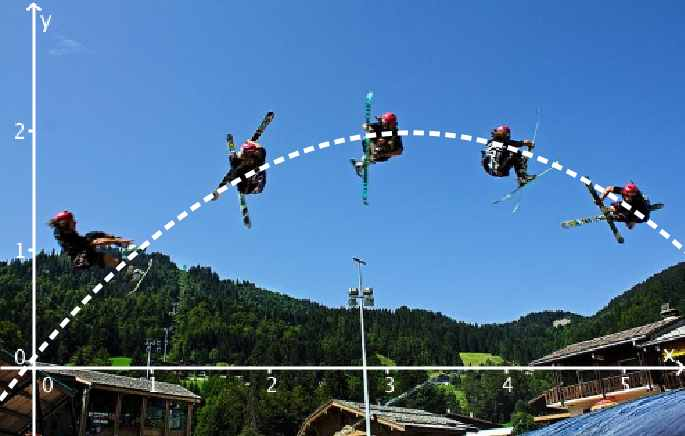
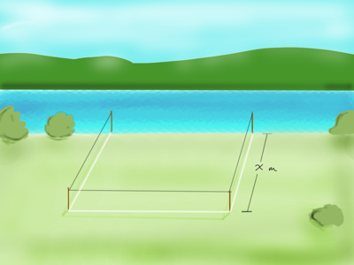
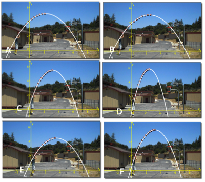

Andregradsfunksjoner og grafene deres
Contents
Andregradsfunksjoner og grafene deres¶
Nå skal du lære om egenskapene til det vi kaller for andregradsfunksjoner. Det er funksjoner som kan skrives på formen
Du skal du kunne
tegne grafen til en slik funksjon
gjøre greie for hvordan ulike verdier for \(a, b\) og \(c\) påvirker grafens utseende
bestemme grafens symmetrilinje og bruke dette til å finne topp- eller bunnpunkt på grafen.
Andregradsfunksjoner i praksis¶
Andregradsfunksjoner dukker opp i mange sammenhenger. Her er noen eksemepler
Eksempel 1
Dersom du kaster en stein med en fart 8 m/s rett opp, vil høyden \(h\) (i meter) være gitt ved
Eksempel 2
Arealet \(A\) til en sirkel med radius \(r\) er gitt ved
Eksempel 3
Kostnadene \(K\) til en bestemt bedrift ved produksjon av \(x\) enheter er gitt ved
Felles for alle disse eksemplene er at største eksponenten i hvert funksjonsuttrykk er 2. Det er derfor vi kaller dem for andregradsfunksjoner.
På samme måte kaller vi funksjonen \( g(x)=x^3-2x+1\) for en tredjegradsfunksjon. Graden er den største eksponenten i funksjonsuttrykket.
Graden til en polynomfunksjon
Vi sier at en polynomfunksjon \(f(x)\) har grad \(n\) dersom det har et ledd som inneholder \(x^n\) og at det ikke har ledd som innholder høyere potenser av \(x\).

Foto: Jeremie BL på Flickr. CC-by-nc-sa-2.0
Oppgave 1
En bonde ønsker å gjerde inn et område mot en elv. Til dette har han 60 meter med nettinggjerde som han ønsker å bruke. Han skal bruke elven som del av inngjerdingen. La bredden på det rektangulære området være \(x\).
Hvilken av funksjonene nedenfor gir oss arealet til området?

\(f(x)=60x-x^3\)
\(f(x) = 60x-2x^3\)
\(f(x) = 60-2x\)
\(f(x) = x^2\)
Grafen til en funksjon¶
I videoen nedenfor kan du lære om hvordan grafen til en parabel ser ut. Du skal senere få se hvordan du tegner en slik graf med papir og blyant og ved hjelp av et digitalt verktøy.
Oppgave 2
I videoen under vil du se syv basketballkast. Disse kastene er markert med bokstavene A, B, C, D, E, F og G i bildet. Trykk Play og Pause, gjerne flere ganger, og gjett på hvilke av kastene som vil treffe oppi kurven. Vi kan røpe at flere av kastene treffer.
from Dan MeyerHvilke av de syv kastene tror du treffer kurven?
Løsning
Det ser ut til at ballen kan gå oppi kurven i alle kasta utenom D og trolig E.

Symmetrilinjen til grafen¶
Når du har tegnet grafen til en andregradsfunksjon, så har du sett at den har en form for symmetri. I videoen på nedenfor skal du få se at grafen til $f(x)=ax^2+bx+c) er symmetrisk om linjen ( x = -\dfrac{b}{2a} )